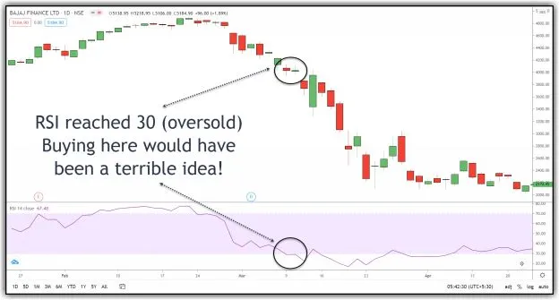
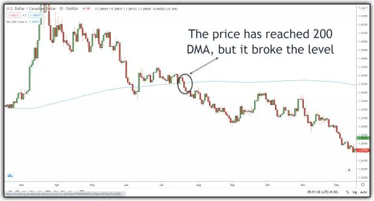
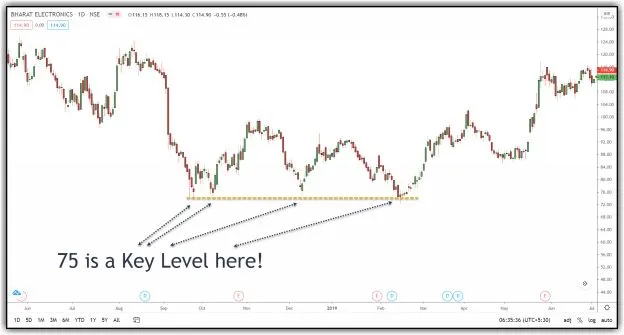
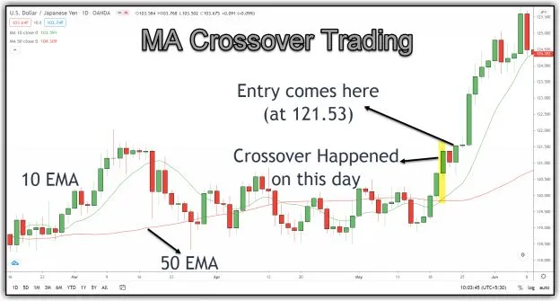
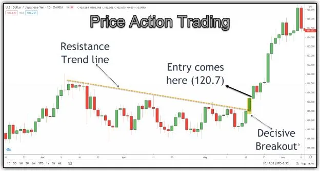
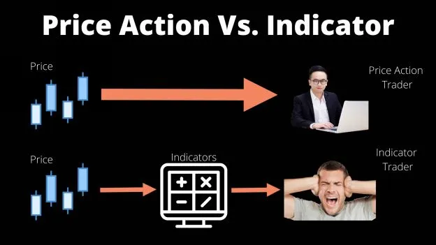

Let me clarify one thing in the beginning. This book is not about glorifying price action trading and condemning indicators. It is all about sharing in-depth information about price action trading, a unique approach to see the price-volume relationship, and also how to switch to full-time trading.
I have a crazy friend who does ultra-crazy things in his life and career. He was my engineering classmate, and I have known him for 20 years. He used to disappear during college days, working holidays, and he would appear, all of a sudden, one day before the exams. He used to beg close friends to share some of their learning on the subject just one day before the exam; but still managed to secure a top-5 position in all the semesters.
My friend ditched all the campus placement offers, and instead, opted to travel through entire India by train. For the next 3 months, he traveled across different cities of India. When he came back from his trip, most of us had started working in some I.T. companies. Instead of following the traditional route, he started his career with a BPO call center job.
After 2 years in the call center job, in night shifts, he wanted to switch his career to I.T. All of us discouraged him, saying, now it's too late to get into an I.T. job. But he was able to get a development role in a small I.T. firm. Initially, he was rejected in the interview.
But he had asked two questions to the interview panel:
Again he was able to get the role. He worked there for 3 years, and when he was ready to move on, the company offered some % of its stake to retain him. He rejected the offer and moved on. He is still in touch with me, but he doesn't disclose anything about his profession. He is in the U.S for many years, and there is a strong rumor among our friends that he is working on a secret project for the U.S government (as he worked on the Aadhar project in India).
I need to write a separate book to explain his qualities. But to cut it short, he took adventurous and crazy decisions throughout his life. He emerged as a winner in all of them, except one. That one exception belongs to the stock market, and that incident pushed me to consider trading on a serious note. Until then, I was not very serious about markets. I used to buy and sell some shares but never thought of trading as a career.

It was 18-May-2009, and it's a Monday. Nifty has hit the Upper Circuit on that day. It's a significant and shocking experience for all traders. All the traders expected a big fall because everyone thought none of the groups would get the majority in the Union elections. But election results were announced on Saturday, and the UPA group had acquired the majority. People started expecting further fall because many thought that the UPA group is not favorable for markets (It is not my view, and this is what I heard from many people in those days).
My friend also had a similar view, and hence he had bought a lot of short positions in Nifty using margin (in those days, margin rules were not strict). But to everyone's surprise, Nifty showed a positive open on 18th May 2009, and within a few minutes, it had hit the upper circuit. I couldn't believe this move and failed to calculate how much money my friend had lost. I tried calling him, but there was no response from him. After a week, he appeared and shared how much money he had lost. It was a significant amount (at least for the people who had started their career just 3-4 years back).
Till then, I was a happy soul. I used to do some equitable work at my office, loved my intense sessions in the gym, and enjoyed my trips every weekend. But this incident haunted me and raised a big question in my heart; for the first time, I became serious, and at the same time, very curious about the markets!
Coming back to indicators, I don't hate them or am against them. I do enjoy studying their behavior in different market conditions. Indicators help beginners as they bring some discipline in their trading (otherwise, they will take a lot of trades in 1-2 days only to lose all their money). Besides, it also helps Algo traders to develop some rules in their trading systems. But I don't use any of them in my trading as they are not necessary for me.
I have seen a few successful traders who use only price action trading. I have seen some profitable traders who use 1-2 indicators in their trading system. But I have seen many traders who lose money with naked price action trading, as well as with indicators. Hence, debating price action trading vs. Indicators is a waste of time. I suggest picking the one which suits your personality. This book gives a detailed overview of price action trading and can give you an edge if you choose this route.
Below are the reasons why I ditched technical indicators:
I feel sad for some people when they come with queries such as, 'RSI is at 30 for XYZ stock which is an oversold zone, can I buy XYZ now?' or 'ABCD stock is at 200 DMA; hence it cannot fall from here, can I accumulate some position?'. Their question itself indicates the ambiguity. They are specifying the sure-shot movement of the price (due to RSI or DMA levels), but they are also looking for suggestions to buy it, which is strange, isn't it? The price doesn't know or doesn't care whether the RSI is in an oversold zone or close to 200 DMA. It does efficiently what it has to do. If the price falls further, the RSI level will also fall further, but at a slower rate, and the moving average will start moving down slowly.
So it is better to remember, as the name suggests, that 'indicators' give an indication and don't dictate the price. Any fluctuations in the price will also bring changes in the indicators.
Let's take a few examples to understand this concept.

Image 1.1 – Failure of RSI Overbought in Bajaj Finance
If you look at image 1.1, buying straightway when the RSI reaches 30 levels (which is an oversold zone) is a terrible idea, and this trade would have ended with a significant loss. As I said earlier, the price doesn't know or doesn't care about RSI movements.

Image 1.2 – Failure of 200 DMA Support Concept in USD-CAD
If you look at image 1.2, buying straightway when the price reaches 200
DMA is a bad idea, and again this trade would have ended with a significant
loss.
I can go on with many indicators, but I don't want to make this a boring
book. I want to keep it simple yet effective to convey essential concepts. The
key take away is, 'Indicators don't dictate the price!' and never take a trade
just because some indicator shows some level.
"What has happened in the past will happen again. This is because Markets are driven by humans, and human nature never changes." – Jesse Livermore.
"Whenever I have had the patience to wait for the market to arrive at what I call a Pivotal Point before I started to trade; I have always made money in my operations." - Jesse Livermore
These are two quotes by the world-famous trader Jesse Livermore. If you observe them, it indicates the importance of human psychology. Hence, this psychology will be reflected at certain key levels in price. One can name them as pivotal points, support & resistance zones, supply & demand zones, etc.
Millions of people trade in a stock/index, and their combined actions result in the up or down movement of the price. Hence, there will be a few pivotal points in any stock or index, and planning a trade near them will always provide good risk-reward trades.

Image 1.3 – Key Level Concept in BEL
If you look at image 1.3, 75 price level acted as a critical level. Whenever the sellers pushed the price to break this level, a strong buyer has accumulated and prevented the fall. Hence, there is a higher probability that the same level will also play a crucial role in the future (unless the big buyer at 75 changes his view).
But all the indicators fail to identify these crucial price levels. It doesn't matter whether you are using RSI, Bollinger Bands, Stochastics, or some crazy combination of your own indicators. They fail to identify these crucial levels, and hence we miss many such good trade opportunities.
Do you agree?
You can pick any indicator, but none of them generate trading signals along with the price. There will always be some delay compared to the price (it is commonsense as most of the indicators are derived from the price).
I will take one simple example to explain the same.
Most of you know that EMA crossover is a primary and popular trading system in the traders' community. A simple system is a combination of 10 EMA and 50 EMA. A buy signal is generated when the 10 EMA crosses 50 EMA from the downside, and a sell signal is generated when the same 10 EMA crosses 50 EMA from the upside.

Image 1.4 – Entry based on M.A. Crossover
If you look at image 1.4, 10 EMA crossed 50 EMA from downside on 20-May. Hence, an entry will come at 121.53 on 22-May (above the high of the crossover candle). It is a late entry as compared to the price action trading.

Image 1.5 – Entry based on Price Action
If you look at image 1.3, 75 price level acted as a critical level. Whenever the sellers pushed the price to break this level, a strong buyer has accumulated and prevented the fall. Hence, there is a higher probability that the same level will also play a crucial role in the future (unless the big buyer at 75 changes his view).
But all the indicators fail to identify these crucial price levels. It doesn't matter whether you are using RSI, Bollinger Bands, Stochastics, or some crazy combination of your own indicators. They fail to identify these crucial levels, and hence we miss many such good trade opportunities.
Do you agree?
You can pick any indicator, but none of them generate trading signals along with the price. There will always be some delay compared to the price (it is commonsense as most of the indicators are derived from the price).
I will take one simple example to explain the same.
Most of you know that EMA crossover is a primary and popular trading system in the traders' community. A simple system is a combination of 10 EMA and 50 EMA. A buy signal is generated when the 10 EMA crosses 50 EMA from the downside, and a sell signal is generated when the same 10 EMA crosses 50 EMA from the upside.

The next question is which indicator to choose among the big list of these indicators? Even if a trader chooses 2-3 indicators, they can come up with different readings anytime. Isn't it?
Now, don't get me wrong. I don't want to deprecate indicators. My concern is that people add 4-5 indicators on the chart, wait for some crossovers or overbought/oversold scenarios, and then pull the trigger. In the end, they don't even know what instrument they are buying or selling. After some time, these traders feel bad when they don't see good results, and then what do they do? They start looking to add one more indicator in their trading system, thinking it will fix the problem. It's a vicious cycle!
From the logical perspective, I don't see much difference between a price action trader and an indicator-based trader because both are trying to analyze the price but using different approaches.
Let me explain.
A price action trader studies the price directly. Most of the indicators are derived from the price. Hence, an indicator trader is also studying the price, but indirectly.
Don't you think it's better to study the price directly instead of investigating the same price using different indicators?
I will leave the choice to you!